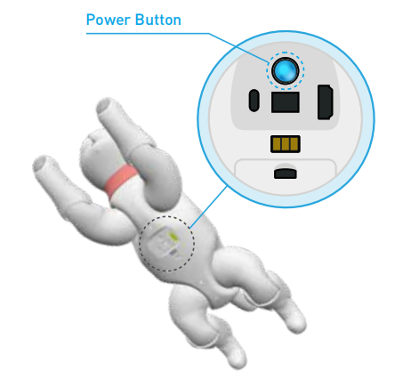

3.Begin your life with MarsCat
3.1 Read before unboxing
1.Please check whether the package is damaged or not before opening
2.Please do not unpack the box violently to avoid a physical injury or a malfunction of MarsCat, be careful and light.
3.Please check all items carefully in the box. If there is any omission, please contact the customer service in time.
- Thank-You Card, Quick Start Guide, Usage instruction and Important Tips, please read Important Tips first.
- MarsCat itself and its tail. The tail is removed and stored in the separate place for safety, users need to install it by themselves(remove the rubber sleeve from the receptacle hole of the tail and push the tail into it).
- Charging Station, Charger, MarsBowl, Changeable pads*4 and Toys(Cat Teaser/Ball/Fish)
3.2 Turn on MarsCat: Wake up MarsCat
- Step1 Press and hold the power button art the belly of MarsCat for 2 seconds. The status LED lights in blue and MarsCat is turned on.

- Step2 Lay down MarsCat on a flat and clean floor as shown below. Wait for a while until MarsCat starts to move.

- Step3 When MarsCat gets up and stands still, proceed to “set up MarsCat with MarsAPP”

3.3 Getting the Chaging Station ready
Charging Station is used for MarsCat charging, the specific usage can refer to How to use Charging Station.
3.4 Set up MarsCat
Refer to MarsApp
3.5 Turn off MarsCat
If you want to turn off MarsCat, press and hold the power button at the belly of MarsCat for 5 seconds. The status LED lights in red first and then turns off later, don’t stop pressing the button until the status LED goes off.